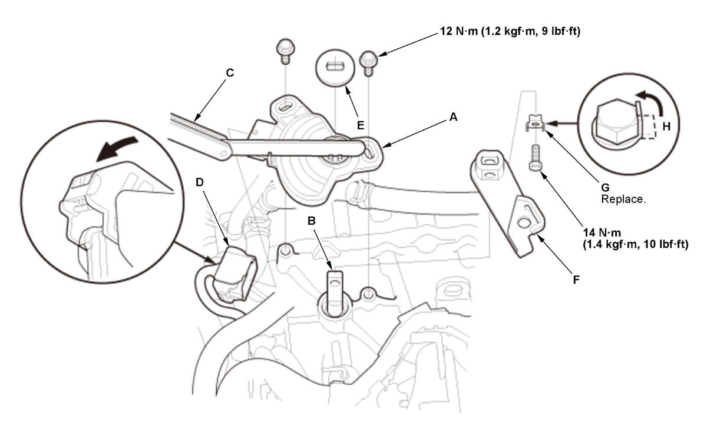

Transmission Range Switch Removal and Installation (K20C2, CVT model): Installation
- Transmission Range Switch - Install
1. Set the transmission range switch (A) to the N position. Align the cutouts (B) on the rotary-frame with the N positioning cutouts (C) on the transmission range switch, then put a 2.0 mm (0.079 in) feeler gauge (D) in the cutouts to hold the transmission range switch in the N position.
NOTE: Be sure to use a 2.0 mm (0.079 in) feeler gauge or equivalent to hold the transmission range switch in the N position.2. Install the transmission range switch (A) gently on the control shaft (B) while holding it in the N position with the 2.0 mm (0.079 in) feeler gauge (C).

Courtesy of HONDA, U.S.A., INC.3. Tighten the bolts on the transmission range switch while you continue holding the N position.
4. Remove the feeler gauge.
5. Connect the connector (D), and make sure it is fully seated.
NOTE: Check the connector for corrosion, dirt, or oil, and clean or repair if necessary.
6. Install the control shaft cover (E).
7. Install the control lever (F) as shown.
8. Secure the control lever with a new lock washer (G), then pry up the lock tab (H) of the lock washer against the bolt head.
- Control Lever - Position
1. Turn the control lever (A) to the P position. - Shift Cable (Transmission Side) - Connect
- Shift Cable - Adjust
- Air Cleaner - Install
- Transmission Range Switch - After Install Check
1. Turn the vehicle to the ON mode. 2. Move the shift lever through all positions/modes, and check that the shift position indicator follows the shift lever operation.
3. Start the engine.
NOTE: Check that the engine starts in P or N position/mode, and does not start in any other positions/modes.
4. Check that the back-up lights come on when the transmission is in R position/mode.
5. Make sure the vehicle is turned to the OFF (LOCK) mode with the shift lever in P position/mode. If it does not, adjust the shift cable again.